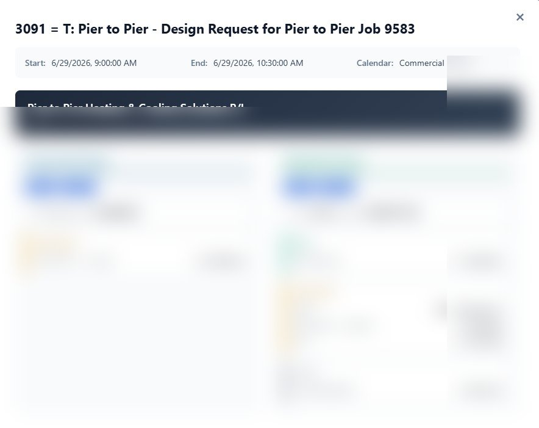

Project · Vic Air Supplies
Calendar & Quoting Operating Surface
Office-wide view aggregating the team's Outlook calendars through Microsoft Graph and overlaying them with live quoting context. Single-tenant architecture refreshed on a scheduled cadence via GitHub Actions.
Commercial & Residential Workload
Week-grid view of the team's Outlook events, colour-coded by Commercial vs Residential, with a synchronised "Upcoming" list on the right.

Workload · 1

Workload · 2